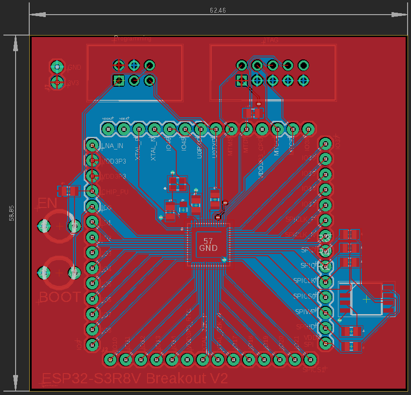
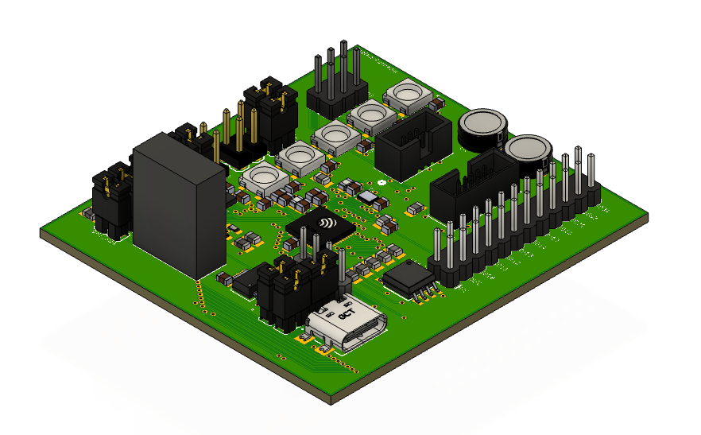

VITA MK1
The Versatile Integration and Testing Apparatus (VITA) MK1 is a custom ESP32-S3 based devkit I made entirely from scratch I did as a general computer engineer capstone project. I aimed for this project to be a spiritual successor to my compact webcam project as I wanted to go through another embedded system development cycle from the ground up, but this time with minimal support and pre-existing resources so I could struggle and dive deeper into different parts of embedded system development.
Below is the general development process I went through:
- Selecting a microcontroller, I wanted to create a devkit and driver files for
- Proper hardware spec’ing for my chosen microcontroller
- Choosing peripherals and figuring out how to interface them with my chosen microcontroller (ESP32-S3)
- Creating a breakout PCB using Autodesk Eagle to allow for microcontroller prototyping.
- Connecting each chosen peripheral to the microcontroller under isolated scenarios and writing driver files from scratch (IE not using any pre-existing Arduino libraries or GitHub repos) using ESP-IDF and embedded C. Some protocols and firmware features I implemented and worked with are as follows:
- UART
- SPI
- SPI for Neopixel control
- I2C
- JTAG
- USB 2.0
- DMA
- Variadic functions
- Creating and assembling a final PCB by hand and creating a demo that showcases all the peripherals in working together using my custom driver files

Breakout PCB to facilitate prototyping

MK1 PCB with all peripherals connected

CAD of VITA MK1

MK1 powered on with demo code running